AI Ürün Aktarıcı
Tedarikçi bağlantılarını mağazanız için ürün başlıklarına, açıklamalara, SEO içeriklerine ve varyant bilgilerine dönüştürün.
Bu çözümü konuşalım ↗
ASTECHGLOBALKarmaşık operasyonları sadeleştirmek için yapay zekâ, yazılım ve veriyi bir araya getiriyoruz.
Birbirinden kopuk araçlar. Tekrarlanan işler. Doğru kişiye zamanında ulaşmayan bilgiler. Ekibinizin değer üreten işlere odaklanabilmesi için parçaları bir araya getiriyoruz.
Tedarikçi bağlantılarını mağazanız için ürün başlıklarına, açıklamalara, SEO içeriklerine ve varyant bilgilerine dönüştürün.
Bu çözümü konuşalım ↗Şirket bilginizden yararlanarak talepleri anlayın, uygun yanıt taslakları hazırlayın ve destek ekibinizi güçlendirin.
Bu çözümü konuşalım ↗Sık sorulan soruları, randevu taleplerini ve potansiyel müşteri kayıtlarını WhatsApp Business akışlarında birleştirin.
Bu çözümü konuşalım ↗ASTECH GLOBAL; yazılım, yapay zekâ ve iş süreçleri otomasyonuna odaklanan bir teknoloji şirketidir. Mühendislik yaklaşımını süreç odaklı düşünceyle birleştirerek işletmenizin çalışma biçimine uygun çözümler geliştiriyoruz.
Bizi tanıyın ↗İhtiyacı anlayalım, süreci inceleyelim ve öncelikleri belirleyelim.
Kapsamı, mimariyi, entegrasyonları ve başarı ölçütlerini netleştirelim.
Çözümü geliştirelim, araçlarınızı bağlayalım ve işleyişi doğrulayalım.
Devri destekleyelim, geri bildirimleri toplayalım ve sonraki adımları planlayalım.
İşinizi yavaşlatan süreçleri, kullandığınız araçları ve iyileştirmek istediğiniz noktaları anlatın. Bir sonraki adımı birlikte değerlendirelim.
İhtiyacınızı birlikte anlayalım ↗